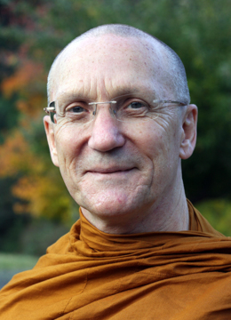

Search within Ajahn Pasanno
Page: 1 2 3 4 5 6 7 8 9 10 11 12 13 14 15 16 17 18 19 20 21 22 23 24 25 26 27 28 29 30 31 32 33 34
[Session] Readings: [Stream entry]
The Island by Ajahn Pasanno and Ajahn Amaro, Chapter 16, pp. 280-281 and pp. 292-293:
Sutta: AN 3.85.
Sutta: MN 34: Shorter Discourse on the Cowherd.
Vinaya: Mahāvagga 1.23-24; read from The Life of the Buddha According to the Pāli Canon by Bhikkhu Ñāṇamoli Chapter 5.
Sutta: MN 74: Dīghanakha Sutta; read from The Life of the Buddha According to the Pāli Canon by Bhikkhu Ñāṇamoli Chapter 5.
1. “Can you explain more about the difference between faith followers and Dhamma followers?” [Stages of awakening] [Faith] [Discernment] [Stream entry] // [Culture/West] [Relinquishment]
Reading: Bhikkhu Bodhi’s footnote 369 to MN 34.10.
2. “When AN 3.95 mentions that a [stream enterer] may still break some minor rules but not the heavier rules, do you see where the cutoff is?” [Precepts] [Vinaya] [Stream entry]
Sutta: AN 4.50: Reasons why a samaṇa doesn’t shine forth. [Intoxicants] [Not handling money] [Sexual misconduct]
3. The evolution of the ordination procedure. [Ordination ] // [Buddha/Biography] [Great disciples] [Three Refuges] [Saṅgha]
4. “What were the follow-on stories of how Sāriputta and Moggallāna attained arahantship?” [Great disciples] [Arahant] [Stream entry]
Reading: MN 74: Sāriputta fans the Buddha. [Upatakh]
Sutta: AN 7.61: The Buddha instructs the dozing Moggallāna.
Reading: MN 37: Nothing is worth adhering to. [Clinging]
5. Story: Ajahn Mun realizes stream entry on almsround in Bangkok in bad weather. Told by Ajahn Cittavīro. [Ajahn Mun] [Stream entry]
Response by Ajahn Pasanno. [Recollection/Dhamma]
[Session] Readings: [Stream entry]
The Island by Ajahn Pasanno and Ajahn Amaro, Chapter 16, pp. 293:
Sutta: SN 12.68.
Reading: AN 6.97: Benefits of stream entry.
The Island by Ajahn Pasanno and Ajahn Amaro, Chapter 17, pp. 294-296:
Suttas: DN 5.29-30; MN 56.18; SN 12.70.
Sutta: SN 12.70: Susīma.
1. Comment: Someone mentioned that the certainty [of a stream enter realizing arahantship in seven lifetimes] was not a certain certainty. [Rebirth] [Arahant] [Stream entry]
Response by Ajahn Pasanno. [Great disciples] [Saṃsāra]
2. “Sometimes in the suttas people are aware that the eye of Dhamma has opened and they are now stream enterers. From my experience, sometimes people think they are sotāpanna but are not. What is the experience [of entering the stream]?” [Stream entry] // [Thai Forest Tradition] [Suffering]
Reference: The Island by Ajahn Pasanno and Ajahn Amaro Chapters 16–19.
Story: “Better than being a dog.” [Ajahn Chah] [Fierce/direct teaching] [Aversion]
Follow-up: “Is it normal for a stream enter to know that he’s a stream enterer?”
Sutta: AN 3.12: One never forgets the place of stream entry.
3. “I remember being at Suan Mokh and seeing in the spiritual library the Dhamma eyes painted on the wall. I heard that Ajahn Buddhadāsa taught ānāpānasati and Dependent Origination because he wanted to open the Dhamma eyes of as many people as possible. Would those who resonated with these teachings continue learning through that path?” [Wat Suan Mokkh] [Ajahn Buddhadāsa] [Mindfulness of breathing] [Dependent origination] [Stream entry] // [Meditation/Techniques] [Faith] [Ajahn Chah] [Zen]
Quote: “Everything is teaching us.” — Ajahn Chah.
Follow-up: “So it’s not like you practice asubha and that’s it for the rest of your life.” [Nature of mind]
4. “What does it mean to be a thief of Dhamma (SN 12.70.27)?” [Stealing] [Dhamma] [Stream entry]
[Session] Readings:
The Island by Ajahn Pasanno and Ajahn Amaro, Chapter 17, pp. 296-299:
Suttas: SN 45.9; SN 56.51; SN 12.27; SN 12.49; SN 22.109.
Sutta: SN 56.51: A Fingernail.
Sutta: SN 12.27: With ignorance as condition…
1. Recollection: Ajahn Pasanno’s brother doesn’t understand the significance of impermanence. [Ajahn Pasanno] [Family] [Impermanence] // [Wat Pah Nanachat]
2. “In theory I get it, but my self, my ego, doesn’t want to let go of itself, even when it’s miserable.” [Self-identity view] [Suffering] // [Release] [Not-self] [Pāli] [Conventions]
Reference: “The Not-Self Strategy” by Ajahn Ṭhānissaro.
Sutta: SN 44.10: The Buddha does not answer the question, “Is there a self?” [Questions]
3. “I’ve always found the simile of the great earth (SN 56.51) encouraging and aspirational. Is [the great mass of suffering] eroded over time or abruptly end when the view changes?” [Similes] [Suffering] [Right View] [Stream entry] // [Saṃsāra]
Sutta: DN 2.102: King Ajātasattu’s crime prevents stream entry. [Killing]
Sutta: Iti 22: Puñña is another word for happiness. [Merit] [Happiness]
4. Story: Ajahn Phut visits Ajahn Chah when he was ill. [Ajahn Phut] [Ajahn Chah] [Sickness] // [Dependent origination] [Chanting] [Wat Pah Nanachat] [Lunar observance days]
5. “It seems to me that suffering and joy are part of the same whole, like yin and yang. Does that mean that [a liberated person] never experiences joy?” [Suffering] [Happiness] [Liberation] // [Ajahn Kovilo] [Conditionality] [Concentration]
Reference: The Wellbeing Cascade by Ajahn Kovilo.
Sutta: AN 6.63.42: Two results of suffering.
6. Comment: Some people identify with their own suffering or feel they are not worth of not suffering. The grooves in the mind—it becomes a cycle, your own suffering. [Suffering] [Self-identity view] [Guilt/shame/inadequacy]
Response by Ajahn Pasanno. [Conditionality] [Dependent origination] [Ajahn Chah]
7. Reflection: The Buddha defines his awakening in terms of gratification, danger, and escape (SN 22.26). [Buddha/Biography] [Aspects of Understanding ] [Benefit/gratification] [Drawbacks] [Escape]
Sutta: SN 48.3: Complete understanding of the Five Faculties . [Faculties] [Stream entry]
[Session] Readings:
The Island by Ajahn Pasanno and Ajahn Amaro, Chapter 17, pp. 299-301:
Suttas: SN 25.1; SN 48.3; AN 7.62.
Sutta: AN 7.66: Seven Suns.
The Island by Ajahn Pasanno and Ajahn Amaro, Chapter 18, pp. 302:
Sutta: MN 44: Cūḷavedalla Sutta.
1. Comment: It’s impossible to tell from the suttas where the intellectual recognition of impermanence tips over into the path of a Dhamma follower. [Sutta] [Impermanence] [Discernment] [Stream entry]
Sutta: SN 25.1.
2. “Do you have any examples of the benefits and drawbacks in sense [audio unclear]?” [Benefit/gratification] [Drawbacks] [Sense bases] // [Faith] [Escape]
3. Reflection from Ajahn Chah: A bhikkhu is one who sees the dangers in saṃsāra. [Ajahn Chah] [Monastic life] [Drawbacks ] [Saṃsāra] // [Almsfood]
Sutta: AN 7.66: Seven Suns.
4. “Is the Buddha’s description of seven suns (AN 7.66) supposed to be factually true or is it just for reflection?” [Nature of the cosmos] // [Impermanence]
5. “In the Ānāpānasati Sutta where you have contemplating feeling (MN 118.19), is the perception within that tetrad?” [Mindfulness of breathing] [Mindfulness of feeling] [Perception] // [Rapture] [Volitional formations]
Sutta: MN 44.14: Perception and feeling.
1. “What distinguished Ajahn Chah from other meditation teachers?” [Teaching Dhamma] [Ajahn Chah] // [Meditation/Techniques] [Right View] [Monastic life]
Follow-up: “Did this inspire the way you teach?” [Ajahn Pasanno]
2. “How did Ajahn Chah react to students who had studied in other Buddhist traditions?” [Teaching Dhamma] [Spiritual traditions] [Ajahn Chah] // [Ajahn Sumedho] [Master Hsu Yun] [Hua tou] [Zen] [Right Effort]
3. “It is said that each monk who know Ajahn Chah well would describe him in a different way when asked. How would you describe him?” [Ajahn Pasanno] [Ajahn Chah] // [Personality] [Personal presence] [Compassion]
Quote: “You never quite knew which Ajahn Chah you were going to get, which always kept you on your toes. And if you weren’t on your toes, it wouldn’t take long before he would call you on it.” [Teaching Dhamma] [Clear comprehension]
4. “What advice would you give to future abbots and teachers of Wat Pah Pong branch monasteries so that the communities maintain the most important characteristics of Ajahn Chah’s style of leadership?” [Abbot] [Ajahn Chah monasteries] [Saṅgha] [Leadership ] [Ajahn Chah] // [Dhamma] [Vinaya] [Chanting] [Translation]
Sutta: DN 16.6: Dhamma-Vinaya is your leader.
Quote: “Ajahn Chah was conservative, but he wasn’t fundamentalist.” [Monastic life]
Story: The Dalai Lama asks the Abhayagiri monks to chant the Maṅgala Sutta (Snp 2.4, Amaravati Chanting Book, p. 46) in Pāli. [Dalai Lama] [Pāli]
Story: Ajahn Chah was one of the first forest monks to ban smoking in the monastery. [Smoking] [Lunar observance days]
Recollection: Ajahn Chah was unique in consulting with senior monks and laypeople when making decisions. [Saṅgha decision making]
5. “The word toramon is sometimes associated with Ajahn Chah’s style of training. Could he be ‘intentionally cruel?’” [Ajahn Chah] [Fierce/direct teaching ] // [Ascetic practices] [Teaching Dhamma] [Trust] [Compassion] [Saṃsāra] [Habits]
Quote: “Ajahn Chah was always willing to put obstructions in front of your desires, views and opinions, and habits, which was incredibly compassionate as well as courageous.” [Craving] [Views] [Courage] [Culture/West]
Story: Ajahn Chah lets a restless junior monk go tudong with devious stipulations. [Sequence of training] [Restlessness and worry] [Tudong]
6. “There are a few stories about Ajahn Chah having psychic powers, particularly reading minds. Did you ever observe anything of that sort with Ajahn Chah? What was Ajahn Chah’s position on such things?” [Psychic powers] [Ajahn Pasanno] [Ajahn Chah] // [Nature of mind]
Story: Ajahn Chah describes the supernatural beings at Wat Pah Pong to a close lay follower, then refuses to talk about other realms with a group from Bangkok. [Wat Pah Pong] [Non-human beings] [Teaching Dhamma]
7. “Were there any particular themes in Ajahn Chah’s teachings that regularly came up?” [Teaching Dhamma] [Ajahn Chah ] // [Virtue] [Right View] [Relinquishment] [Knowing itself]
8. “Many of Ajahn Chah’s direct disciples have become revered teachers themselves. Would you say the harsher conditions and more rigorous practices of the early days of Wat Pah Pong played a necessary role in their training and development or was it mostly due to Ajahn Chah being such a masterful teacher?” [Ajahn Chah lineage ] [Ascetic practices] [Wat Pah Pong] [Teaching Dhamma] [Ajahn Chah] // [Humility] [Ajahn Mun]
Quote: “There’s this nostalgia for the good old days. … To me it’s a fallacy or a fantasy.” [Suffering] [Poverty]
Quote: “To be able to lay a foundation that was carried on is really exceptional.” [Saṅgha] [Leadership]
Recollection: There were an equal number of monks and nuns at Wat Pah Pong. [Mae Chee]
9. “Can you speak about the connection Ajahn Chah had with Luang Por Tongrat and Luang Por Tongrat in general?” [Ajahn Tongrat ] [Ajahn Chah] // [Thai sects] [Ajahn Mun] [Monastic routine] [Almsround]
Reference: Ajahn Utane’s biography of Ajahn Tongrat. Ajahn Mudito translated this into Portuguese in 2019, and there is a machine translation from the Portuguese.
Quote: “Oh, Chah, you’ve come.” — Ajahn Tongrat’s first words to Ajahn Chah.
Story: Ajahn Tongrat makes a racket under Ajahn Mun’s kuti in order to provoke a Dhamma talk. [Ajahn Mahā Boowa] [Fierce/direct teaching]
Story: Ajahn Tongrat dies in the Dhamma seat. [Death]
10. “What would Ajahn Chah say if he visited our Western monasteries today in 2025? Would he recommend any changes?” [Western Ajahn Chah monasteries] [Ajahn Chah] // [Mutual lay/Saṅgha support] [History]
Quote: “Be careful about getting too comfortable.” [Heedlessness]
Suttas: SN 17: Be cautious about gain, honor, and fame. [Worldly Conditions] [Fierce/direct teaching]
11. “Could you tell us your very first encounter with Luang Por Chah? How did it happen? What did he say to you? What impression did you have then?” [Ajahn Pasanno] [Ajahn Chah] // [Temporary ordination] [Wat Pah Pong] [Culture/Natural environment] [Ajahn Sumedho]
Story: Ajahn Pasanno is impressed by handwritten notes about Ajahn Chah’s teaching by a visitor to Wat Pah Pong. [Wat Phleng Vipassanā]
Quote: “If you want to stay here, you have to stay at least five years.” — Ajahn Chah.
Quote: “The place itself [Wat Pah Pong] was a reflection of Ajahn Chah.” [Lay life] [Lunar observance days]
Story: The branch monasteries and lay community gather for Māgha Pūjā. [Festival days] [Ajahn Chah monasteries] [Community]
1. Reflection: Ajahn Chah inspired people to be willing to commit to practice and training. [Monastic life/Motivation] [Determination] [Ajahn Chah] // [Ajahn Pasanno] [Fourfold Assembly] [Relinquishment]
2. Recollection: Ajahn Pasanno writes to his parents that he will stay with Ajahn Chah for five years because he wants to pick up Ajahn Chah’s peace and unshakeability. [Ajahn Pasanno] [Monastic life/Motivation] [Sequence of training] [Equanimity] [Ajahn Chah]
3. “When Luang Por Chah’s physical condition deteriorated and he was no longer physically active, how did the Saṅgha and lay community react to it? And how did you feel about it? How did the Saṅgha manage to organize new leadership? Any challenges, confusions, or conflicts?” [Sickness] [Saṅgha] [Ajahn Pasanno] [Leadership] [Ajahn Chah] [Conflict] // [Impermanence] [Saṅgha decision making] [Grief] [Wat Pah Pong] [Ajahn Liem]
Recollection: Ajahn Chah told the Saṅgha that his illness was incurable and they would have to look after him. [Health care ]
I did my grieving when Ajahn Chah was still alive and sick. Recollection by Ajahn Pasanno. [Death]
Recollection: Caring for Ajahn Chah as a community. [Health care ] [Mae Chee] [Communal harmony]
Recollection: Preparing for Ajahn Chah’s funeral. [Funerals] [Building projects] [Ajahn Chah Stupa]
Quote: “His example was always one of giving himself to what was of benefit to the Dhamma, to the Vinaya, to others. There was so little personal agenda and personal preferences ever shown.” [Generosity]
4. Story: A group of military generals ask Ajahn Chah to bless some medallions. [Ajahn Chah] [Amulets] // [Wat Pah Pong] [Food] [Saṅgha decision making] [Relics] [Ajahn Chah Stupa] [Funerals]
5. “What do you treasure most among what you/we have inherited from Luang Por Chah?” [Ajahn Pasanno] [Ajahn Chah]
Quote: “He had given himself completely, and he had reaped the fruits completely.” [Relinquishment] [Liberation]
6. “What were the criteria for founding new branch monasteries at Ajahn Chah’s time?” [Ajahn Chah monasteries] [Saṅgha decision making] [Ajahn Chah] // [Wat Keuan] [Environment] [Mutual lay/Saṅgha support] [Ajahn Anek] [Wat Pah Sai Ngam] [Faith] [Wat Phu Din Dang]
7. “How did Luang Por Chah cultivate his wisdom (satipañña)? How did he generate his energy (viriya)?” [Discernment] [Energy] [Ajahn Chah] // [Doubt] [Teaching Dhamma]
Quote: “He was always curious to reflect, to investigate, to experiment, to try out things and to see what worked and what didn’t work.” [Personality] [Appropriate attention]
8. “How did Luang Por Chah relate to the lay community around him and tailor the Dhamma to their own circumstances?” [Lay life] [Teaching Dhamma] [Ajahn Chah] // [Wat Pah Pong] [Lunar observance days] [Building projects] [Cultural context] [Stories]
Story: Ajahn Chah’s talkative older brother helps with their mother’s funeral. [Family] [Funerals]
9. “Is there a story about when Ajahn Chah wanted to give feedback to a senior monk and he waited 20-30 years?” [Admonishment/feedback] [Ajahn Chah] // [Culture/Thailand]
10. “Were there any memories from the period of training with Ajahn Chah that really stand out in your mind? In what ways did you find it difficult?” [Ajahn Pasanno] [Monastic life] [Ajahn Chah]
Story: Ajahn Pasanno skips morning pūjā to meditate diligently at his kuti. Ajahn Chah calls him lazy. [Monastic routine]
Story: Ajahn Pasanno sits vigil at a cremation and makes a bathing cloth from the cloth used to wrap a corpse. [Funerals ] [Robes ] [Wat Pah Pong] [Recollection/Death]
Story: Ajahn Pasanno joins the Wat Pah Pong Saṅgha, exchanges his requisites, and excitedly attends his first Pāṭimokkha at Wat Pah Pong. Ajahn Chah keeps the monks sitting until 3 am. [Vinaya] [Requisites] [Not handling money] [Pāṭimokkha] [Compassion] [Relinquishment]
1. “Have you had experiences of clarifying motivation that go beyond the theoretical or abstract?” [Ajahn Pasanno] [Spiritual urgency] // [Ajahn Chah] [Wat Pah Pong] [Relinquishment]
Quote: “Was it suffering?” — Ajahn Chah. [Suffering] [Self-identity view]
Story: Ajahn Chah used ancient stones to mark the Wat Pah Pong sīmā. [Sīmā]
Quote: “Are these rocks heavy?” — Ajahn Chah. [Cessation of Suffering]
Sutta: SN 22.86: Dukkha and the ending of dukkha.
2. “Lately I’ve noticed a decline in my earnestness and diligence. While I feel commitment and contentment in keeping the precepts, my focus and energy for formal practice often fades. Can you please advise on how to rekindle that sense of energy and enjoyment in formal practice?” [Energy] [Meditation] // [Hearing the true Dhamma] [Spiritual friendship] [Amaravati] [Abhayagiri] [Dhamma online]
Sutta: SN 45.2: Half of the Holy Life.
Sutta: AN 2.126: Conditions for the arising of Right View. [Right View] [Appropriate attention]
3. “People are fortunate these days because teachings are readily accessible. Could you talk about the difficulties you had [accessing the teachings 50 years ago]?” [Hearing the true Dhamma] [Ajahn Pasanno] // [Learning] [Dhamma books] [Travel] [Culture/Thailand]
Story: Ajahn Pasanno stays in a hotel in Chiang Mai and visits a monastery to read an English-language Tipiṭaka every day. [Tipiṭaka]
Story: Ajahn Pasanno’s first meditation retreat was a month-long solitary Mahasi Sayadaw-style retreat. [Meditation retreats] [Mahasi Sayadaw]
Story: Ajahn Pasanno takes temporary ordination at Wat Phleng Vipassanā. [Temporary ordination] [Wat Phleng Vipassanā]
4. “Could you give some sutta references on positive desire (chanda)?” [Desire]
Reference: The Wellbeing Cascade by Ajahn Kovilo.
Reference: Buddhadhamma by P. A. Payutto, Chapter 11, “The Nature and Importance of Desire.”
Story: P.A. Payutto completes the Thai Pāli studies curriculum as a novice. The King sponsors his ordination. [P. A. Payutto ] [Sutta] [Novices] [Pāli] [Sickness] [Study monks] [King Rama IX]
5. Comment: I found the differentiation that you made between wholesome desire and unwholesome desire very useful. [Desire] [Craving]
Response by Ajahn Pasanno. [Discernment] [Kamma] [Volition] [Appropriate attention] [Relinquishment] [Happiness]
6. “There are suttas where people talk about honoring their parents. Are there examples of people who had very unskillful parents or childhood PTSD and brought these questions to the Buddha?” [Western psychology] [Sutta] [Parents] [Abuse/violence] // [Culture/India] [Saṅgha] [Virtue]
Sutta: Ud 5.3: Suppabuddha the Leper. [Gradual Teaching] [Stream entry]
7. “We have the fifth precept about refraining from alcohol and drugs. Were there lots of alcoholics and drug addicts in the Buddha’s time? Can this be applied in 2025 to people struggling with addiction to watching news, mobile phones, or social media?” [Intoxicants] [News] [Social media] // [Abhayagiri] [Suffering]
Quote: “We’re addicted to suffering.”
8. “Could you speak about world-weariness?” [Disenchantment] // [Gratitude] [Suffering] [Skillful qualities] [Happiness]
Sutta: AN 11.1: Causal chain of well-being including disenchantment. [Conditionality]
Story: Ajahn Mahā Boowa reflects on the drawbacks of lust. [Ajahn Mahā Boowa] [Unattractiveness] [Sensual desire] [Drawbacks]
Note: The audio file ends mid-sentence.
2. Recollection: Ajahn Chah was a memorable person; his influence has spread around the world. [Ajahn Chah lineage ] [Ajahn Chah] // [Faith] [Ajahn Sumedho]
3. Recollection: My introduction to Ajahn Chah. [Ajahn Pasanno] [Ajahn Chah] // [Temporary ordination] [Travel] [Wat Phleng Vipassanā] [Forest versus city monks]
4. Recollection: Ajahn Chah’s community in 1975. [Ajahn Chah lineage] [Ajahn Chah] // [Wat Pah Pong ] [Western Ajahn Chah lineage] [Thai Ajahn Chah monasteries] [Isan] [Personal presence]
5. Recollection: Ajahn Chah taught by example, but put the focus on the monastic training and community. [Monastic life] [Saṅgha] [Ajahn Chah] // [Humility]
Quote: “He was unique in his ability to draw people in without it having to be about him.” [Personal presence ] [Personality]
6. Recollection: Why I stayed with Ajahn Chah. [Ajahn Pasanno] [Determination] [Ajahn Chah] // [Family] [Sequence of training] [Equanimity] [Personal presence]
7. Recollection: He was always willing to push us beyond what we thought we could do. [Fierce/direct teaching] [Ajahn Chah] // [Intuition]
Quote: “I hope you’re not afraid of suffering. … If you’re afraid of suffering, you’re not going to grow in wisdom here.” — Ajahn Chah to Jack Kornfield. [Jack Kornfield] [Fear] [Suffering] [Discernment]
Quote: “If you want to stay here, you have to stay at least five years.” — Ajahn Chah to Ajahn Pasanno. [Ajahn Pasanno] [Sequence of training] [Determination]
Story: Ajahn Chah asks the young Ajahn Pasanno to become abbot of Wat Pah Nanachat. [Wat Pah Nanachat] [Abbot] [Sickness]
8. Reflection: Amaravati and other monasteries are offshoots of Ajahn Chah’s gift of monastic training where people can continue to practice. [Monastic life] [Ajahn Chah monasteries] [Ajahn Chah]
9. Recollection: Ajahn Pasanno’s first lunar observance night at Wat Pah Pong. [Ajahn Pasanno] [Wat Pah Pong] [Lunar observance days] [Ajahn Chah] // [Monastic life] [Pace of life] [Patience]
Quote: “You learn as you go. You expand your ability to go beyond the limitations you set for yourself.” [Learning]
Quote: “The more you resist and complain in your mind, the more you suffer.” [Aversion] [Suffering] [Habits]
10. Reflection: Ajahn Chah used the Vinaya rules as a basis to train in mindfulness and clear comprehension. [Vinaya] [Mindfulness] [Clear comprehension] [Ajahn Chah] // [Volition] [Perception of a samaṇa] [Protocols ] [Sense restraint] [Beauty] [Faith]
Story: Ajahn Chah demonstrates how to put down a yahm (monk’s shoulder bag). [Requisites] [Ajahn Sumedho]
Vinaya: Mahāvagga 1.23: Sāriputta gains faith from Venerable Assiji’s demeanor. [Great disciples]
11. Reflection on Ajahn Chah’s ability to illustrate Dhamma. [Teaching Dhamma] [Similes] [Ajahn Chah]
Simile: Suffering is like continually tightening a bolt. [Suffering]
12. Reflection: Ajahn Chah’s compassion and empathy. [Compassion] [Ajahn Chah]
Quote: “I’ve been like that.” — Ajahn Chah. [Ajahn Munindo] [Suffering]
13. Recollection: Ajahn Chah enjoyed teasing people and playing with words. [Humor] [Ajahn Chah] // [Ajahn Gavesako] [Ajahn Amaro] [Ajahn Pasanno] [Compassion]
Stories: The Squirrel Story and the Donkey Story. [Kittisaro] [Monastic life] [Patience]
Note: Kittisaro tells these stories himself here.
14. Reflection: His leadership and his teaching came from his example. [Leadership] [Teaching Dhamma] [Ajahn Chah] // [Lunar observance days] [Devotion to wakefulness]
Recollection: Ajahn Chah sits until midnight despite having malaria. [Sickness] [Posture/Sitting] [Sitter's practice]
15. “When you first arrived at Ajahn Chah’s monastery, how did you communicate with him?” [Ajahn Pasanno] [Language] [Ajahn Chah] // [Ajahn Sumedho] [Translation] [Paul Breiter] [Thai] [Isan]
Story: Venerable Varapañño could recite the Pāṭimokkha perfectly. [Pāṭimokkha]
16. “Can you tell us more about Ajahn Chah’s background?” [Ajahn Chah] // [Wat Pah Pong] [Geography/Thailand] [Education] [Novices] [Ordination] [Ajahn Sao] [Forest versus city monks] [Death] [Ajahn Mun] [Thai sects]
Story: Six-year-old Chah plays at being a monk. [Monastic life]
17. “Can you speak about Luang Por Chah’s opinion about Thai superstitions and amulets?” [Culture/Thailand] [Superstition] [Amulets] [Ajahn Chah] // [Humor] [Ghost] [Generosity]
Story: A young supporter drafted into the military asks Ajahn Chah for protection. [Buddha images]
18. “What gave you the inspiration and strength of spirit to want to dedicate yourself to follow the way?” [Ajahn Pasanno] [Faith] [Determination] // [Suffering] [Spiritual search] [Culture/Thailand] [Travel] [Meditation/Results]
19. “In the draft of your biography, it says that growing up you felt you didn’t fit in with normal society. When you came to a Buddhist country and the monastery, did it feel like home?” [Ajahn Pasanno] [Culture/West] [Culture/Thailand] [Monastic life] // [Purpose/meaning]
20. “Nowadays we have so much information about Dhamma, whereas when you began, you talked about following an example. How much did being in the presence of someone like Ajahn Chah mean? Could we now overlook this since we have so much information?” [Dhamma online] [Ajahn Pasanno] [Mentoring] [Personal presence] [Ajahn Chah] // [Amaravati] [Aspects of Understanding]
21. “How did your becoming a monk go down with your family, and how did that affect you?” [Ajahn Pasanno] [Monastic life] [Family] // [Ajahn Jayasaro]
22. “People say that Westerners are much more individualistic than Asians. Do you think Ajahn Chah was good at understanding the Western way of thinking?” [Culture/West] [Culture/Asia] [Ajahn Chah]
[Session] Readings: AN 7.48.10: Saññā Sutta; SN 35.82: Loka; Ud 4.1: Meghiya; AN 1.136: Uppādā Sutta; SN 15.20: Mount Vepulla. [Impermanence]
1. Quote: “Whatever speech doesn’t take into account the reality of impermanence is not the speech of wise person.” — Ajahn Chah. [Ajahn Chah] [Right Speech] [Discernment] [Impermanence]
2. Reflection: The sign of spiritual maturity is the inclination to disenchantment and relinquishment. [Meditation/Results] [Disenchantment] [Relinquishment] [Impermanence] // [Ajahn Chah]
3. When asked why there are thieves in Thailand, Ajahn Chah replies, “The Buddha didn’t tell them to do that. They do that themselves.” [Ajahn Chah] [Culture/Thailand] [Buddhist identity] [Stealing]
4. The perception of impermanence should be cultivated for the removal of the conceit “I am.” [Conceit] [Impermanence] // [Self-identity view] [Relinquishment] [Nibbāna] [Cessation of Suffering]
Quote: “Being right doesn’t lead one to freedom from suffering. Oftentimes it just makes you a pain in the butt.” [Views]
Sutta: Ud 4.1.21: Meghiya Sutta.
Sutta: AN 10.60.11: “This is peaceful, this is sublime …”
5. Reflection: If you see the steadfastness and orderliness of the Dhamma, of the truth, it can free the heart. [Lawfulness] [Naturalness] [Liberation] [Impermanence] // [Pāli]
6. Quote: “No cracks, no Buddhism.” — Ajahn Chah. [Ajahn Chah] [Stupas/monuments] [Impermanence] // [Recollection/Dhamma]
7. Reflection: Absorbing the truth, “Even the Sāsana will pass away,” doesn’t lead to a sense of dismay; it leads to wonder and the motivation, “How can I help others?” [Truth] [Spiritual urgency] [Compassion] [Suffering] [Impermanence] [Characteristics of existence]
Recollection: Ajahn Chah saw so clearly and was incredibly compassionate. [Ajahn Chah] [Fierce/direct teaching]
Quote: “What is the mind of an arahant like?” – “Only compassion.” — Ajahn Mahā Boowa. [Ajahn Mahā Boowa] [Ajahn Mun]
Quote: “Anicca, dukkha, and anatta are tools we rely on for transforming the heart.”
8. “‘I am’ and ego are very deeply embedded in our consciousness. You mentioned that observing impermanence could help. Are there any other practical steps we can take every day to dismantle ego and ‘I am?’” [Self-identity view] [Impermanence] // [Suffering] [Relinquishment] [Not-self]
Sutta: Ud 3.10: “For however one conceives it, it is always other than that.”
9. “If nothing is permanent, does that apply to the mind?” [Nature of mind] [Impermanence] // [Knowing itself] [Liberation]
Sutta: SN 12.61: You’d be better off taking the body as self.
10. “Is liberation impermanent?” [Liberation ] [Impermanence] // [Nibbāna]
11. “Is Nibbāna unconditioned? Can Nibbāna make a connection with you, or do you have to go to Nibbāna?” [Nibbāna] [Unconditioned ] [Impermanence] // [Characteristics of existence]
Sutta: Ud 8.3: Nibbāna Sutta (Chanting Book translation).
Quote: “The place where there’s no coming, no going, no standing still. What’s that?” — Ajahn Chah. [Ajahn Chah]
12. “You mentioned that Ajahn Mahā Boowa has been a bit coarse with his disciples. Has your voice always been soft and kind and loving?” [Ajahn Mahā Boowa] [Fierce/direct teaching] [Ajahn Pasanno] [Compassion]
Quote: “Well, I hope I’ve gotten better. … The early years of being the abbot of Wat Pah Nanachat, I was pretty insufferable.” [Wat Pah Nanachat] [Abbot]
13. “Could you talk about what to do with disenchantment? You may feel that you’re being lazy by not engaging with the world. …” [Disenchantment] [Seclusion] // [Spiritual friendship] [Amaravati] [Abhayagiri] [Dhamma online]
Sutta: SN 45.2: Half of the Holy Life.
14. “I am interested to hear more about the qualities of wholeheartedness. You mentioned that the English language does not have a word that captures it. There’s something that can go from non-attachment/dispassion to apathy, which is not helpful in the world.” [Language] [Relinquishment] [Dispassion] [Sloth and torpor] [Impermanence] // [Disenchantment] [Skillful qualities] [Pāli] [Conditionality] [Abhidhamma]
Suttas: Suttas: AN 6.10, AN 10.2: The cascade of well being.
1. “What are the options for practicing with getting older, getting weaker, physically and mentally less resilient?” [Ageing ] // [Relinquishment] [Death] [Not-self]
Discussion of the natural environment at Chithurst and Amaravati. Led by Ajahn Cittapālā and Ajahn Pasanno. [Culture/Natural environment] [Chithurst] [Amaravati] [Weather]
2. “How to find a good balance between personal individual practice and helping the community? How have you practiced with this yourself, having had the role of abbot for such a long time?” [Meditation] [Service] [Ajahn Pasanno] [Abbot] // [Seclusion ] [Restlessness and worry] [Ajahn Sumedho] [Idealism] [Becoming] [Craving not to become] [Monastic routine]
Quote: “You really have to learn how to step back from your own mind and give attention to that sense of solid connection with the Dhamma practice.” [Dhamma]
Quote: “If we don’t really develop a sense of giving and sharing and lovingkindness and compassion, any amount of meditation that you do never really comes to much fruition.” [Generosity] [Goodwill]
3. “People often say that Amaravati is like an institution. What is a perspective on this?” [Amaravati ] [Saṅgha] [Monastery organizational structure] // [Ajahn Pasanno]
Reflection by Ajahn Pasanno, Ajahn Ahiṃsako and Ajahn Karuṇiko: The benefits and drawbacks of large monasteries. [Mutual lay/Saṅgha support] [Teaching Dhamma] [Christian monastics] [Wat Pah Nanachat] [Spiritual traditions]
Quote: “You don’t have to worry, Dad. Buddhism in Thailand isn’t organized.” — Ajahn Siripañño. [Ajahn Siripañño] [Culture/Thailand]
4. “If you had to choose one monastery in Thailand that you can always go back to, where you had the best moments or experiences, what would it be?” [Ajahn Pasanno] [Thai Ajahn Chah monasteries] // [Dtao Dum ] [Culture/Natural environment]
Story: Ajahn Pasanno has the intuition that his time in Thailand had come to an end. [Culture/Thailand] [Monastic life]
Story: Ajahn Pasanno’s decision to help with Abhayagiri. [Abhayagiri] [Ajahn Amaro] [Saṅghapāla] [Ajahn Karuṇadhammo]
5. “It sounds like you’re quite a community builder in various places. … When I first came here (to Chithurst), I was struck by the way the community works amazingly well. Have you seen any examples of communities of laypeople living together based on monastic principles?” Answered by Ajahn Pasanno, Ajahn Ahiṃsako, Sister Ñāṇasirī and Ajahn Karuṇadhammo. [Ajahn Pasanno] [Community ] [Saṅgha] [Lay life] // [Precepts] [Vinaya] [Portland Friends of the Dhamma] [Amaravati] [Gaia House] [Culture/Thailand] [Upāsikā Kee Nanayon] [Culture/West]
6. “How do you find it best to differentiate between true insights and insight defilements?” Answered by Ajahn Pasanno and Ajahn Cittapālā. [Insight meditation ] [Defilements of insight] // [Tranquility] [Relinquishment] [Simplicity]
Quote: “A really true insight—you don’t get anything from.” — Ajahn Pasanno.
7. “Can you offer any reflections about people’s tendency to measure samādhi, concentration, and jhāna and their doubt and discontent about how much is enough to develop insight?” [Calming meditation] [Concentration] [Jhāna] [Insight meditation] // [Craving] [Relinquishment] [Etymology] [Translation] [Right Mindfulness] [Right Effort]
Quote: “Samādhi is a holiday for the heart.” — Ajahn Chah. [Ajahn Chah] [Ajahn Sumedho]
Simile: Samādhi is like a chicken in a bamboo coop. [Similes] [Spaciousness] [Mindfulness]
Sutta: MN 44.12: The bases of samādhi.
Simile: Unification of mind is like a bowl of fruit. [Unification]
8. “Is that [developing samādhi; refer to the previous question] possible to do in a 24-hour period? I find it difficult to continuously do what you said, especially when I’m asleep.” [Concentration] [Continuity of mindfulness] // [Long-term practice]
9. Comment by Tan Candasaro: At Wat Pah Nanachat a monk asked you, “What advice would you have for young monastics on the path?” You replied, “Peaks and valleys, ups and downs.” [Monastic life] [Long-term practice]
Response by Ajahn Pasanno.
10. “Do you think the knowing of the peace of samādhi is always something which will be remembered? It gives a kind of confidence.” [Concentration] [Tranquility] [Faith] // [Purpose/meaning]
11. “Insights give a lot of confidence in the practice, a lot of trust. So when insights come, is it important to nourish them?” [Insight meditation] [Faith] // [Bases of Success] [Desire] [Discernment] [Craving] [Self-identity view] [The New Yorker] [Calvin and Hobbes]
Page: 1 2 3 4 5 6 7 8 9 10 11 12 13 14 15 16 17 18 19 20 21 22 23 24 25 26 27 28 29 30 31 32 33 34